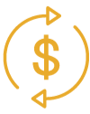

MODOO RETURN Ecosystem
-
1. MODOO RETURN STABLE COIN.
MODOO RETURN coin is a stable coin. It will serve as a medium to maintain and activate the MODOO RETURN ecosystem to be built through the MODOO RETURN project. The MODOO RETURN token is not related to any asset price, and as a utility token, it is used as a means of purchasing cryptocurrency only on the MODOO RETURN platform. In addition, MODOO RETURN STABLE COIN can be exchanged for M-mark pure gold in the MODOO RETURN project at the same amount as the invested amount.
2.I'LL BE BACK COIN.
IBBC tokens can be used on the MODOO RETURN platform and can be exchanged for gold. IBBC is a token that can be traded on the MODOO RETURN platform and is fixed at 1 IBBC = 1 gram of gold. IBBC Token is a means of paying MODOO RETURN STABLE COIN, which is calculated as 500/1 of the amount invested by staking IBBC Token and paid daily.
Connection between cryptocurrency and real assets
-

Care and Safety
We build efficient trading methods and secure transactions by reducing the boundary between cryptocurrency and real assets.
-

Digitization
Tokenized cryptocurrencies that can be traded as real assets are secured based on blockchain.
-

diversity
Securing assets from market uncertainty can be secured by building a portfolio with cryptocurrency and physical assets.
WITH PROOF-OF-OWNERSHIP ON THE BLOCKCHAIN
You can exchange it for real gold through MODOO RETURN
The MODOO RETURN platform is a platform that provides the ability to securely store and move users' assets, and induces the concurrency of transactions, enabling reliable transactions without intermediaries. It is a platform designed to allow users to move between users and intermediaries by storing users' assets stored in the DB inside the service in the DB and blockchain outside the service.
The platform uses MODOO RETURN TOKEN currency to measure the value of user assets, and this MODOO RETURN allows anyone to conduct fair and safe gold transactions.
MODOO RETURN Platform
Through the MODOO RETURN platform, you can view and trade global real estate (hair salons) with smart glasses.
View Affiliate Companies